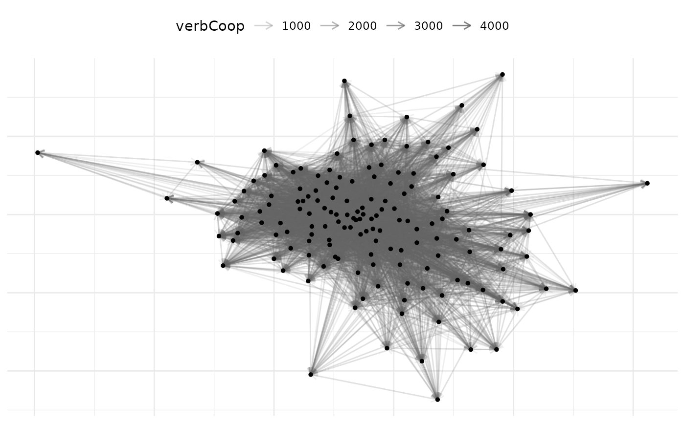
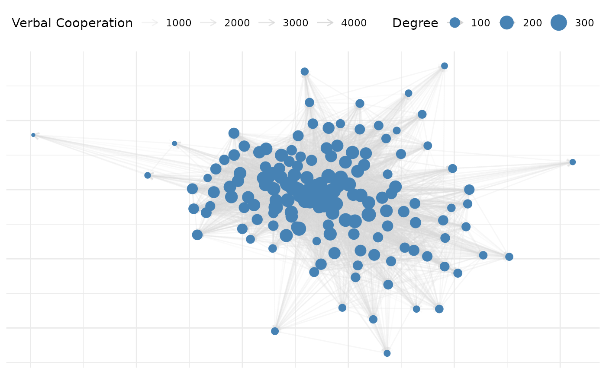
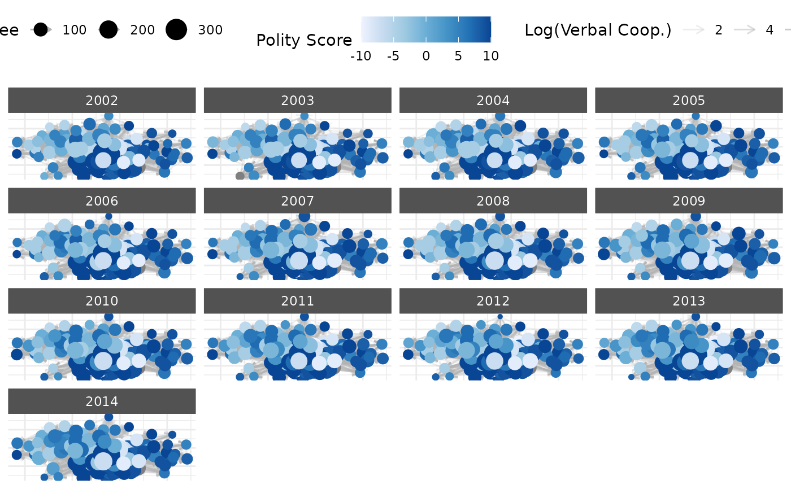
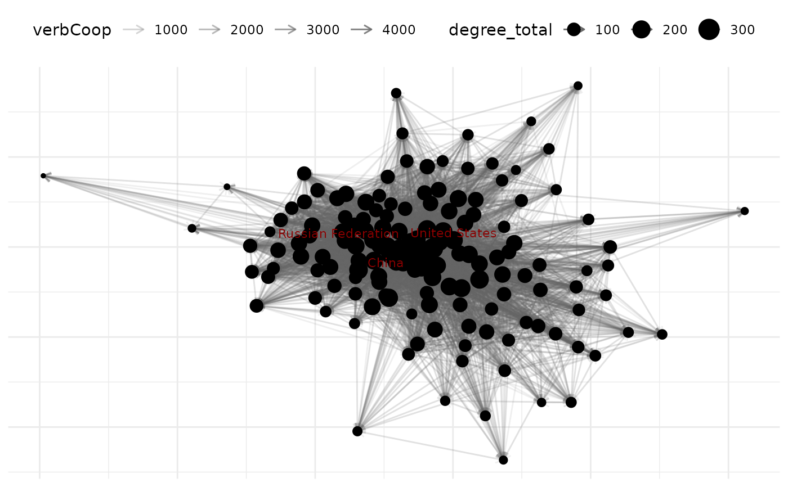
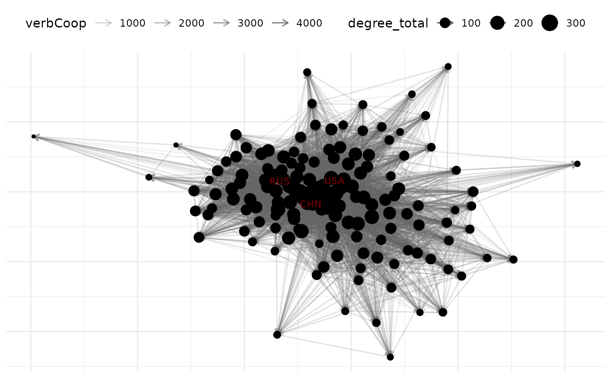
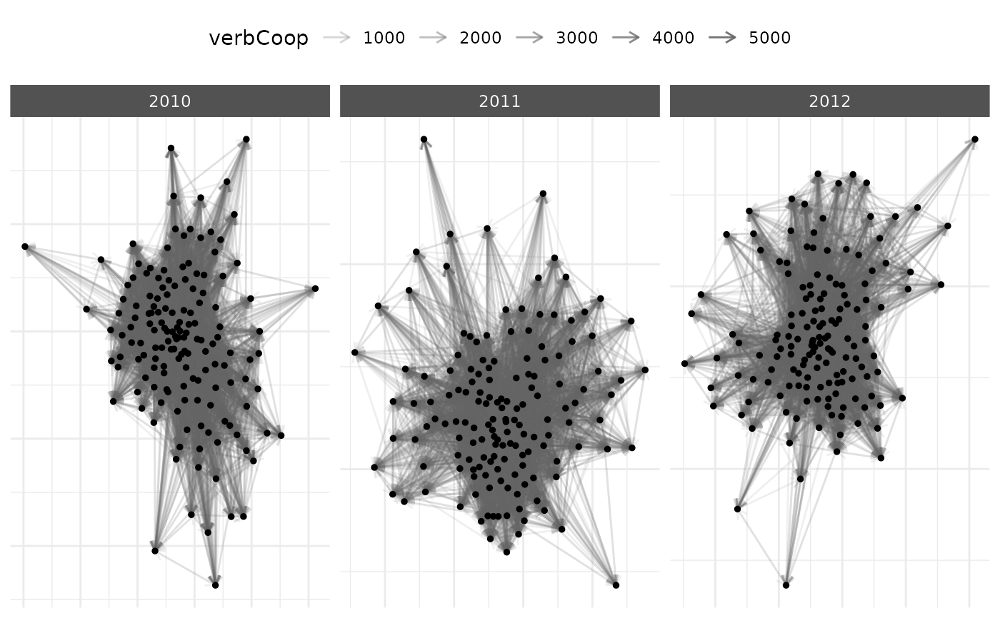
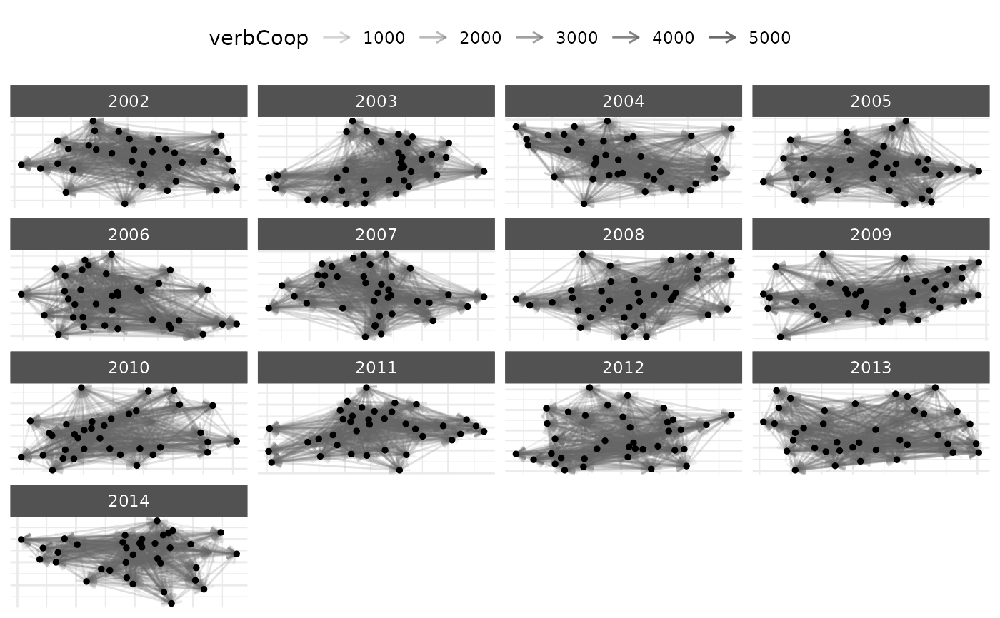

Creates customizable network visualizations from netify objects using ggplot2. Supports cross-sectional and longitudinal networks with extensive options for mapping network attributes to visual properties.
Usage
# S3 method for class 'netify'
plot(x, ...)Value
A ggplot2 object that can be further customized with additional layers, scales, themes, etc. For longitudinal networks, includes facets for each time period.
If return_components = TRUE, returns a list of plot components that can
be manually assembled or modified.
Details
Naming Conventions:
The function supports two naming styles for parameters:
Recommended: Use
node_*for node attributes and*_byfor variable mappings (e.g.,node_size_by = "degree")Legacy: Use
point_*for nodes and*_varfor variables (e.g.,point_size_var = "degree")
Default Behaviors:
For weighted networks, edge transparency maps to weight by default
For directed networks, arrows are added automatically
For longitudinal networks, time periods are shown as facets
Isolates are removed by default (set
remove_isolates = FALSEto keep)
Customization Tips:
Use
mutate_weightto handle skewed weight distributionsCombine fixed and variable aesthetics (e.g., fixed color with variable size)
Add ggplot2 layers after the plot call for further customization
Use
select_textfor selective labeling in dense networks
Layout Parameters
layoutCharacter string specifying the igraph layout algorithm. Options include:
"nicely"(default),"fr"(Fruchterman-Reingold),"kk"(Kamada-Kawai),"circle","star","grid","tree","bipartite"(for bipartite networks),"randomly", and others. For ego networks, additional options are available:"radial"(ego-centric with optional grouping) and"concentric"(ego at center with alters in rings). Seeget_node_layoutandget_ego_layoutfor full details.point_layoutOptional data.frame or list of data.frames containing pre-computed node positions with columns 'actor', 'x', and 'y'. Overrides
layoutif provided.static_actor_positionsLogical. For longitudinal networks, should node positions remain constant across time? Default is
FALSE.which_staticInteger. When
static_actor_positions = TRUE, which time period's layout to use as template? IfNULL(default), creates composite layout from all time periods.seedInteger for reproducible layouts. Default is 6886.
Display Control
add_edgesLogical. Display edges? Default is
TRUE.add_pointsLogical. Display nodes as points? Default is
TRUE.add_textLogical. Add text labels to nodes? Default is
FALSE.add_text_repelLogical. Add text labels with automatic repositioning to avoid overlaps? Default is
FALSE. WhenTRUE, overridesadd_text. Uses ggrepel for positioning.add_labelLogical. Add boxed labels to nodes? Default is
FALSE.add_label_repelLogical. Add boxed labels with automatic repositioning to avoid overlaps? Default is
FALSE. WhenTRUE, overridesadd_label. Uses ggrepel for positioning.remove_isolatesLogical. Remove unconnected nodes? Default is
TRUE.curve_edgesLogical. Use curved edges? Default is
FALSE.use_theme_netifyLogical. Apply netify theme? Default is
TRUE.facet_typeCharacter. For multilayer longitudinal networks, controls faceting style:
"grid"(default) creates a 2D grid with time × layer,"wrap"creates wrapped facets with combined time-layer labels.facet_ncolInteger. Number of columns for facet_wrap layouts. Only used when
facet_type = "wrap"or for single-dimension faceting.rescale_edge_weightsLogical. For multilayer networks, should edge weights be rescaled to a common 0-1 range across all layers? This is useful when layers have very different weight scales. Default is
FALSE.
Subsetting Parameters
node_filterAn expression to filter nodes. The expression can reference any nodal attribute. For example:
node_filter = degree_total > 5to show only nodes with total degree greater than 5. The expression is evaluated in the context of the nodal data, so any node-level variable can be used.edge_filterAn expression to filter edges. The expression can reference any edge attribute (including 'weight' for weighted networks). For example:
edge_filter = weight > 0.5to show only edges with weight greater than 0.5. The expression is evaluated in the context of the edge data, so any edge-level variable can be used.time_filterFor longitudinal networks, a vector of time periods to include in the plot. Can be numeric indices or character labels matching the time dimension. If NULL (default), all time periods are plotted. For cross-sectional networks, this parameter is ignored.
Node Aesthetics
Fixed aesthetics (same for all nodes):
node_sizeorpoint_sizeNumeric. Size of all nodes.
node_colororpoint_colorColor of node borders.
node_fillorpoint_fillFill color of nodes (note that fill will only work with certain shapes).
node_shapeorpoint_shapeShape of nodes (see
?pch).node_alphaorpoint_alphaTransparency (0-1).
node_strokeorpoint_strokeWidth of node borders.
Variable aesthetics (mapped to data):
node_size_byorpoint_size_varColumn name for size mapping.
node_color_byorpoint_color_varColumn name for border color.
node_fill_byorpoint_fill_varColumn name for fill color (note that fill will only work with certain shapes).
node_shape_byorpoint_shape_varColumn name for shape.
node_alpha_byorpoint_alpha_varColumn name for transparency.
Edge Aesthetics
Fixed aesthetics:
edge_colorColor for all edges. Default is "black".
edge_linewidthWidth for all edges. Default is 0.5.
edge_linetypeLine type (1=solid, 2=dashed, etc.).
edge_alphaTransparency (0-1).
edge_curvatureCurvature amount when
curve_edges = TRUE.edge_arrowArrow specification for directed networks. Example:
arrow(length = unit(0.2, "cm")).adjust_arrow_endpointsLogical. Should arrow endpoints be adjusted to stop at node boundaries? Default is
FALSE. Only affects directed networks.edge_arrow_gapNumeric. Additional gap between arrow tip and node boundary as a proportion of node radius (0-1). Default is 0.2. Only used when
adjust_arrow_endpoints = TRUE.edge_arrow_size_scaleNumeric. Scale factor for converting node sizes to coordinate units. If
NULL(default), automatically calculated based on plot range.
Variable aesthetics:
edge_color_byoredge_color_varColumn name for color mapping.
edge_linewidth_byoredge_linewidth_varColumn name for width.
edge_linetype_byoredge_linetype_varColumn name for line type.
edge_alpha_byoredge_alpha_varColumn name for transparency. For weighted networks, defaults to the weight variable if not specified.
Text and Label Options
Selective labeling:
select_textCharacter vector of node names to show as text. When used, text labels will automatically use
geom_text_repelto avoid overlaps.select_text_displayAlternative text to display (same length as
select_text).select_labelCharacter vector of node names to show with boxes. When used, labels will automatically use
geom_label_repelto avoid overlaps.select_label_displayAlternative labels (same length as
select_label).
Text aesthetics:
text_sizeFixed size for all text. Default is 3.88.
text_colorFixed color for all text. Default is "black".
text_alphaFixed transparency for text.
text_size_byVariable to map to text size.
text_color_byVariable to map to text color.
Label (boxed text) aesthetics have similar parameters with label_ prefix.
Text repel parameters (when add_text_repel = TRUE):
text_repel_forceForce of repulsion between overlapping text. Default is 1.
text_repel_max_overlapsMaximum number of overlaps to tolerate. Default is 10.
text_repel_box_paddingPadding around text. Default is 0.25.
text_repel_point_paddingPadding around points. Default is 0.
text_repel_segment_colorColor of connecting segments. Default is "grey50".
Label repel parameters (when add_label_repel = TRUE):
- Similar to text_repel but with
label_repel_prefix label_repel_label_paddingPadding around label boxes. Default is 0.25.
label_repel_label_rRadius of label box corners. Default is 0.15.
Scale Labels
Customize legend titles:
node_size_labelorpoint_size_labelLegend title for size.
node_color_labelorpoint_color_labelLegend title for color.
edge_alpha_labelLegend title for edge transparency.
edge_color_labelLegend title for edge color.
Highlighting Parameters
highlightCharacter vector of node names to highlight with different colors. Non-highlighted nodes will be colored grey. Highlighted nodes can also be automatically enlarged if
highlight_size_increaseis greater than 1.highlight_colorNamed vector of colors for highlighted nodes. If NULL, uses default distinct colors (red, blue, green for up to 3 nodes, or a color palette for more). Names should match the values in the
highlightparameter. Example:c('USA' = 'blue', 'China' = 'red', 'Russia' = 'green').highlight_labelTitle for the highlight legend. Default is "Highlighted".
highlight_size_increaseNumeric factor(s) to increase size of highlighted nodes. Can be a single value (applied to all highlighted nodes) or a vector of length
length(highlight) + 1where each value corresponds to a highlighted node and the last value applies to "Other" nodes. Default is 1 (no size increase). Example:c(3, 1, 1, 0.5)for 3 highlighted nodes where the first is 3x larger, the next two are normal size, and all others are half size.show_other_in_legendLogical. Include "Other" category in legend? Default is FALSE. When FALSE, only highlighted nodes appear in the legend.
Ego Layout Parameters
For ego networks (created with ego_netify), additional layout options
control the ego-centric visualization:
ego_group_byCharacter string specifying a nodal attribute to use for grouping alters in ego layouts. For "radial" layout, creates sectors. For "concentric" layout, determines ring assignment.
ego_order_byCharacter string specifying a nodal attribute to use for ordering alters within groups or rings. Common options include "degree_total".
ego_weight_to_distanceLogical. For weighted networks with "radial" layout, should edge weights determine distance from ego? Higher weights place alters closer to ego. Default is
FALSE.ego_ring_gapNumeric (0-1). Gap between concentric rings as proportion of radius. Only for "concentric" layout. Default is 0.3.
ego_sizeNumeric. Relative size of central area reserved for ego. Larger values create more space between ego and alters. Default is 0.1.
Special Parameters
mutate_weightFunction to transform edge weights before plotting. Example:
log1pfor log(x+1) transformation. Applied before mapping to aesthetics.return_componentsLogical. Return plot components instead of assembled plot? Useful for manual customization. Default is
FALSE.styleA style function (e.g.,
style_budapest). Applies a complete visual style including colors, shapes, and layout preferences.
Examples
# Load example data
data(icews)
# Basic cross-sectional network
icews_10 <- icews[icews$year == 2010, ]
net_10 <- netify(
icews_10,
actor1 = "i", actor2 = "j",
symmetric = FALSE,
weight = "verbCoop"
)
# Simple plot
plot(net_10)

# add nodal stats to netlet
net_10 <- add_node_vars(
net_10,
summary_actor(net_10),
"actor"
)
# Customized plot with new naming convention
plot(net_10,
edge_color = "lightgrey",
node_size_by = "degree_total", # Instead of point_size_var
node_color = "steelblue",
edge_alpha_by = "verbCoop", # Instead of edge_alpha_var
node_size_label = "Degree",
edge_alpha_label = "Verbal Cooperation"
)
# Longitudinal network example
net_longit <- netify(
icews,
actor1 = "i", actor2 = "j",
time = "year",
symmetric = FALSE,
weight = "verbCoop",
nodal_vars = c("i_polity2", "i_log_gdp")
)
# Add network statistics
net_longit <- add_node_vars(
net_longit,
summary_actor(net_longit),
actor = "actor",
time = "time"
)
# Plot with multiple aesthetics
plot(net_longit,
# Edges
edge_color = "grey70",
mutate_weight = log1p, # Transform weights
# Nodes
node_size_by = "degree_total",
node_color_by = "i_polity2",
# Labels
node_size_label = "Total Degree",
node_color_label = "Polity Score",
edge_alpha_label = "Log(Verbal Coop.)",
# Layout
static_actor_positions = TRUE # Keep positions constant
)

# Selective labeling example
plot(net_10,
node_size_by = "degree_total",
select_text = c("United States", "China", "Russian Federation"),
text_size = 3,
text_color = "darkred"
)
#> Warning: Removed 149 rows containing missing values or values outside the scale range
#> (`geom_text_repel()`).

# choose alternative labels for selected text
plot(net_10,
node_size_by = "degree_total",
select_text = c("United States", "China", "Russian Federation"),
select_text_display = c("USA", "CHN", "RUS"),
text_size = 3,
text_color = "darkred"
)
#> Warning: Removed 149 rows containing missing values or values outside the scale range
#> (`geom_text_repel()`).

# Time subsetting example
plot(net_longit,
time_filter = c("2010", "2011", "2012")
)

# Node subsetting example
# democracies with high GDP
plot(net_longit, node_filter = ~ i_polity2 > 6 & i_log_gdp > 25)

# use return_components=TRUE
# to get back ggplot2 pieces of plot
g10 <- plot(
net_10,
node_alpha = .8,
arrow = ggplot2::arrow(length = ggplot2::unit(0.01, "inches")),
node_size_by = "degree_total",
node_size_label = "Log(Degree)",
edge_alpha_label = "Log(Verbal Coop.)",
remove_isolates = TRUE,
mutate_weight = log1p,
return_components = TRUE
)
# Manually assemble with custom modifications
# to scale aesthetics such as edges
g10$base +
netify_edge(g10) +
ggplot2::scale_alpha_continuous(range = c(0.01, 0.2)) +
netify_node(g10) +
theme_netify()
